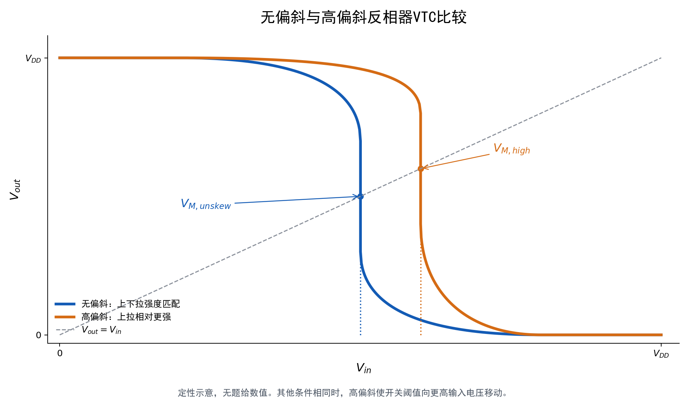

题目来源
考试相关/数字集成电路设计2025-2026-1期末考试回忆版.pdf · PDF页 1 · 原题号 Concept 1
原题按原编号列出；实验题明确整理为读图或笔试问法。重复知识点保留各来源版本，避免漏掉不同参数与条件。
先读：本题所需概念
反相器由 上拉、 下拉构成；上拉把输出拉向电源，下拉把输出拉向地。电压传输曲线 表示静态输入输出关系；输入等于输出处的电压叫开关阈值 ，曲线斜率 叫增益。 是输出高低电平， 是输入可判低高的边界，噪声容限为 、。驱动系数 与几何宽长比不是同一个量。施密特触发器有上升、下降两个不同门限，中间范围保持先前状态，这叫迟滞。
知识出处：PPT/chapter3-inverter01-static behavior-T 20261011.pdf，PDF 第 9–54 页。
回看完整解释：8.1 连接和最基本的工作过程 · 8.2 给定输入、输出，怎样判断两管状态 · 8.3 输出究竟停在哪里，怎样求VM · 8.4 从器件模型求反相器增益 · 8.5 怎样由VM和g估算噪声容限 · 8.6 为什么三个“好尺寸”不一样 · 8.7 课件里另外两种结构需要知道什么。题目中的专用参数以题干定义为准；可点带底纹的术语回查首次解释。
题目
画出无偏斜（unskew）反相器和高偏斜（high-skewed）反相器的曲线，并比较两种反相器开关阈值 的大小。

查看答案与解析
答案与解析
高偏斜反相器的向右移动，其开关阈值通常高于无偏斜反相器。
无偏斜表示上拉、下拉驱动经过平衡，不等于和的几何宽度必须相同。高偏斜优先改善输出由低到高的翻转，通常通过减弱相对强度、使相对更强实现。需要更高输入才能使下拉与上拉电流平衡，所以 增大。
开关阈值定义为 。长沟道、忽略长度调制并在两管饱和的条件下：
令 ，得到：
在阈值、电源等其他条件相同的前提下，增大 会使 提高。若阈值幅值对称且强度匹配，无偏斜反相器有 ；高偏斜反相器则向更高输入电平移动。
所附为新绘定性示意。原回忆题没有给器件尺寸、阈值、电源等数值，不能据此给出开关阈值的数值差。